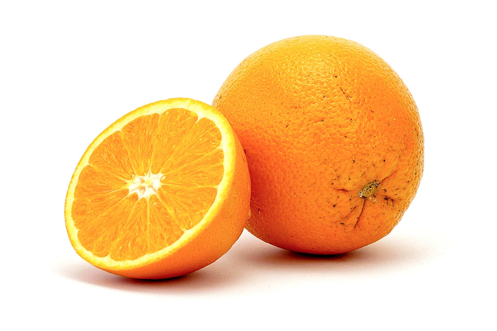
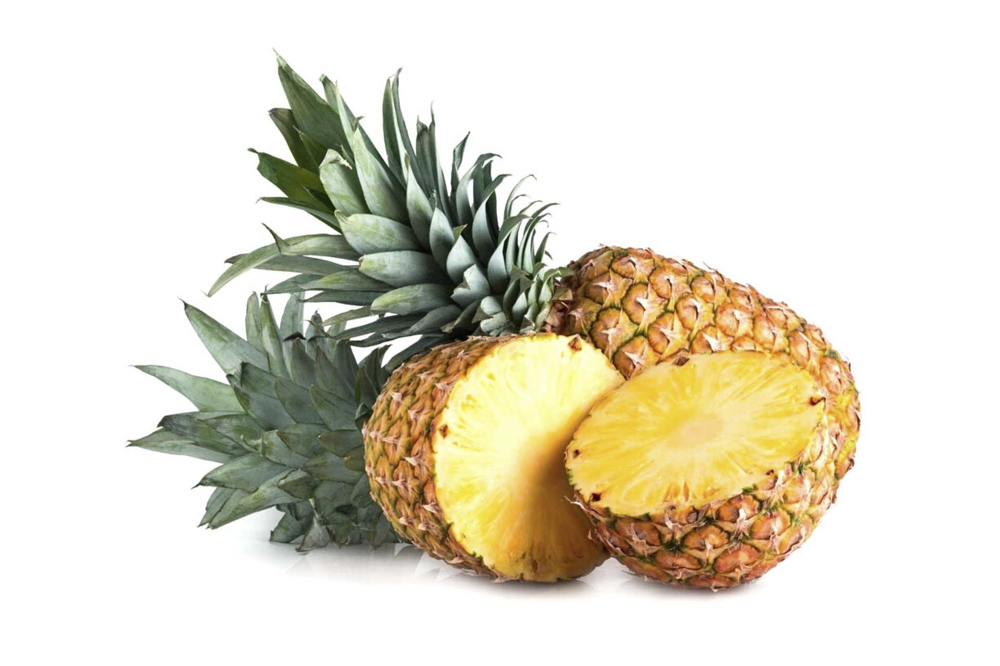
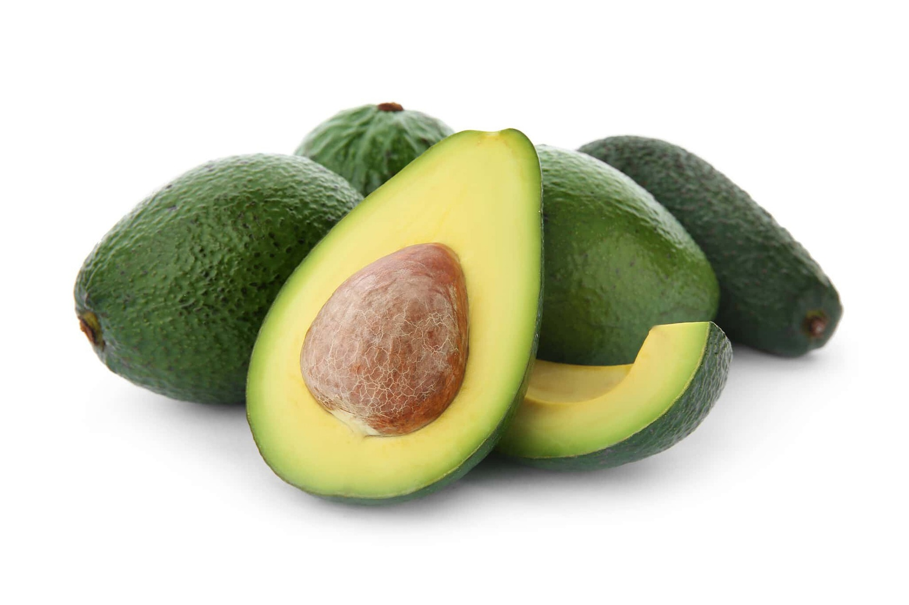
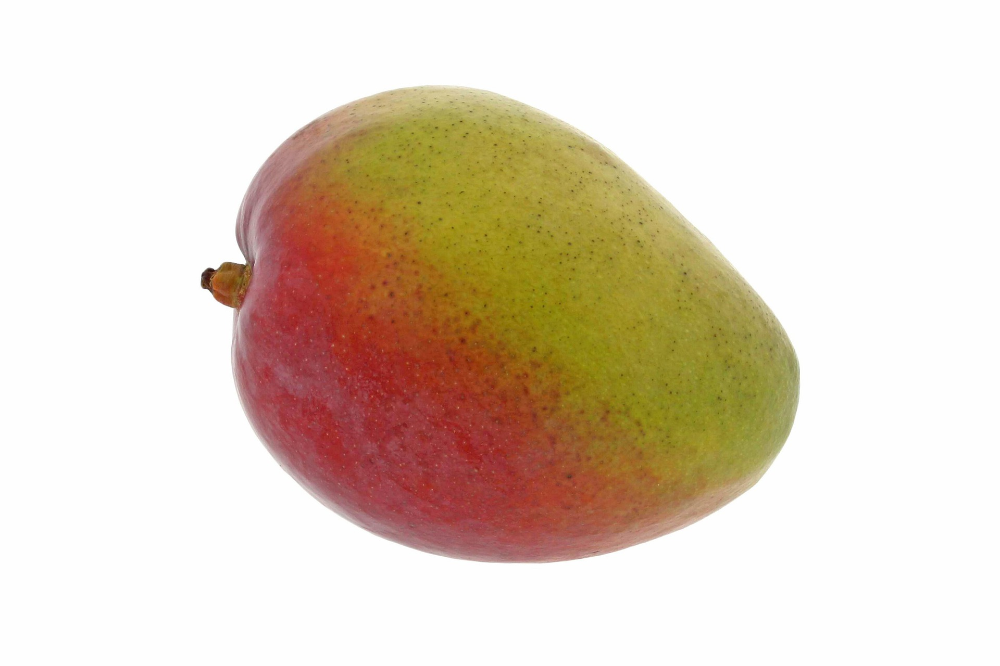

The orange or sweet orange is the fruit of the orange (citrus sinensis) of the family of Rutaceae. there are several varieties of oranges clasified into four variel groups. Edible, it's renowned for its high vitamin C content and is the fourth most cultivated fruit in the world.

The Pineapple (Ananas comosus) is a species of plant Xerophytic, native to South-America which is known primarily for its edible fruit. it is terrestrial species of herbaceous plant, can reach 1 to 1.5m i all direction.

Avocado fruit is a large berry containing a single seed, the fruit of domestic varieties has a butter flesh when ripe, depending on variety, avocado have green,brown, purplish, or black skin whe ripe, and may be pear-shapd, egg-shaped or spherical.

The mango is the fruit of the mango tree of the family of Anacardiaceae , native to the forests of India, from Pakistan and Burma where it still gros wild.This tree, the Mangifera indica, has evergreen , dense and dark foliage.